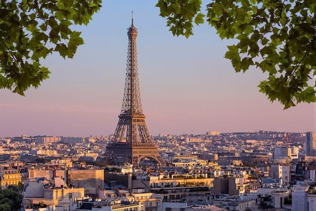
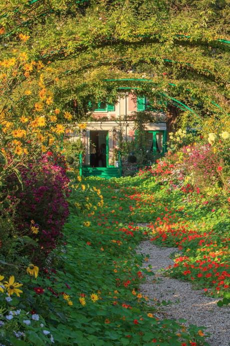

Embárcate en una odisea de elegancia y encanto en la tierra de la moda, el arte y la gastronomía. Desde las majestuosas calles de París hasta los campos de lavanda en Provenza,
cada rincón de Francia es una invitación a la aventura. Descubre la magia que ha cautivado a viajeros durante siglos, donde cada callejón es un cuadro y cada rincón un susurro
de historia. ¡Bienvenido a la experiencia única que solo Francia puede ofrecer!
Maravillas de Francia: Un Viaje Visual a Través de sus Atractivos Turísticos Emblemáticos
Francia es un país repleto de atractivos turísticos que abarcan desde monumentos icónicos hasta pintorescos paisajes naturales.
Torre Eiffel (París)
El símbolo más reconocible de Francia, esta torre de hierro forjado se erige majestuosamente en el corazón de París y ofrece vistas panorámicas impresionantes de la ciudad.

Museo del Louvre (París)
Uno de los museos más grandes y famosos del mundo, alberga invaluables obras de arte, incluyendo la Mona Lisa y la Venus de Milo.
Monte Saint-Michel
Una abadía medieval construida sobre una isla rocosa en Normandía, rodeada por impresionantes mareas. Es un sitio del Patrimonio
Mundial de la UNESCO.
Palacio de Versalles (Versalles)
Un exquisito palacio real conocido por sus lujosos salones, hermosos jardines y la famosa Sala de los Espejos.
Catedral de Notre-Dame (París)
Aunque sufrió un incendio en 2019, la Catedral de Notre-Dame sigue siendo un símbolo emblemático de la arquitectura gótica.
Valle del Loira
Conocido como el "Jardín de Francia", este valle alberga numerosos castillos impresionantes, como el Château de Chambord y el Château de Chenonceau.
Costa Azul
La región costera en el sureste de Francia, conocida por sus playas glamorosas, ciudades elegantes como Niza y Mónaco, y pueblos pintorescos como Saint-Paul-de-Vence.
Giverny
Donde se encuentra la casa y los jardines del pintor impresionista Claude Monet, una escapada tranquila a la naturaleza y el arte.

Explorando la Elegancia Francesa: Un Vistazo al Itinerario de 5 Días en Francia
Francia cuenta con una diversidad de atracciones turísticas, desde monumentos icónicos hasta encantadores paisajes. Aquí tienes un itinerario sugerido
para 5 días y 4 noches en Francia, enfocado en explorar París y sus alrededores
Día 1: París - Introducción a la Ciudad de la Luz
Mañana:Llegada a París, desayuno en una cafetería local.
Tarde:Visita a la Torre Eiffel y paseo por los Campos de Marte.
Noche:Cena en un bistró parisino y paseo por la orilla del Sena.
Día 2: París - Arte y Cultura
Mañana:Visita al Louvre para explorar las obras maestras.
Tarde:Recorrido por el Barrio Latino y visita a la Catedral de Notre-Dame.
Noche:Cena en un restaurante típico parisino.
Día 3: París - Palacios Reales
Mañana:Excursión al Palacio de Versalles y sus jardines.
Tarde:Regreso a París y visita a los Campos Elíseos y el Arco de Triunfo.
Noche:Cena en un restaurante con vista a los Campos Elíseos.
Día 4: Valle del Loira - Castillos y Naturaleza
Mañana:Viaje al Valle del Loira.
Tarde:Visita a uno o dos castillos emblemáticos, como Château de Chambord o Château de Chenonceau.
Noche:Cena en un restaurante local de la región.
Día 5: París - Despedida y Belleza Natural
Mañana:Tiempo libre para compras en Le Marais.
Tarde:Paseo por Montmartre y visita a la Basílica del Sagrado Corazón.
Noche:Cena de despedida en un restaurante con vistas panorámicas.
Descifrando el Encanto Francés: Detalles y Costos de tu Experiencia de 5 Días en Francia
Los costos exactos del viaje puede depender de la temporada del año, las tarifas actuales, la elección de hoteles y restaurantes, y si se aprovechan ofertas o descuentos.
Sin embargo, una estimación general de los costos para un viaje de 5 días y 4 noches en Francia desde Colombia, asumiendo un presupuesto moderado, es el siguiente.
Vuelos (ida y vuelta desde Bogotá, Colombia a París, Francia):
Precio estimado: $1,500 - $2,500 USD por persona.
Hospedaje:
París (3 noches): $300 - $600 USD.
Valle del Loira (1 noche): $100 - $200 USD.
Transporte interno (tren de París al Valle del Loira):
Precio estimado: $50 - $100 USD por persona.
Comida:
Precio promedio por comida: $20 - $50 USD por persona.
Total estimado para 5 días: $400 - $800 USD por persona.
Entradas a sitios turísticos y actividades:
Louvre: $15 - $20 USD.
Palacio de Versalles: $20 - $30 USD.
Entradas a castillos en el Valle del Loira: $15 - $25 USD cada uno.
Otras atracciones y actividades: $50 - $100 USD.
Transporte local (metro, autobús, etc.):
Precio estimado: $20 - $40 USD por persona.
Gastos personales (compras, souvenirs, etc.):
Precio estimado: $100 - $200 USD por persona.
Seguro de viaje:
Precio estimado: $50 - $100 USD por persona.
Costo total estimado del viaje:
Rango bajo: $2,555 - $4,315 USD por persona.
Rango alto: $3,635 - $5,840 USD por persona.
Nota: Los precios son aproximados y están sujetos a cambios. Se recomienda verificar las tarifas actuales y realizar reservas con anticipación para obtener mejores precios.